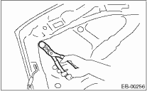
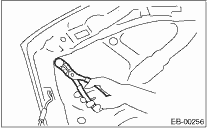

1. Open the front hood to remove the washer nozzles.
2. Release the clips to remove the front hood insulator.

3. Remove the bolts to disconnect the hood from hinges.

EXTERIOR BODY PANELS > Front Hood
1. Open the front hood to remove the washer nozzles.
2. Release the clips to remove the front hood insulator.

3. Remove the bolts to disconnect the hood from hinges.